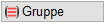
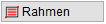

")
")
Dübelleisten mit Beschriftung einzeln, gruppenweise oder innerhalb eines Bereiches löschen. Gewählte Elemente werden sofort, ohne Rückfrage gelöscht.
Beschriftungen können mit der Funktion [einzeln] gelöscht werden.
|
Hinweise: |
|
·Nach dem Löschen müssen Sie die Liste neu generieren! ·Wenn Sie das allgemeine Löschen [Konst1 | FenÄnd → lösche bzw. lösmMP] benutzen, wird erst nach dem Speichern die Anzahl korrekt in der Liste wiedergegeben. ·Wenn ein Element der Dübelleiste gesperrt oder ausgeblendet ist, wird die Dübelleiste nicht gelöscht. |

So wird's gemacht:
§Wählen Sie, welche Dübelleisten gelöscht werden sollen.
|
Löschen einzelner Dübelleisten oder Beschriftungen mit Zeigerlinie. [Element]. a)Klicken Sie eine Dübelleiste an. Die Dübelleiste wird inklusive Beschriftung gelöscht. b)Klicken Sie eine Beschriftung an. Nur die Beschriftung wird gelöscht. |
 |
Alle Dübelleisten innerhalb einer Gruppe löschen. [Element]. Nur für Verlegungen ab ISBCAD 2015. Bei älteren Verlegungen erscheint eine Meldung. Verwenden Sie gegebenenfalls die Option einzeln oder Rahmen. Ist die Beschriftung über eine Zeigerlinie mit der Verlegung verbunden, wird alles komplett gelöscht. Steht die Beschriftung ohne Bezug dar, wird nur die Verlegung gelöscht. |
 |
Dübelleisten innerhalb eines bestimmten Bereiches löschen. [1.Punkt/Element]; [2.Punkt]. Die Leisten müssen komplett im Rahmen liegen. |